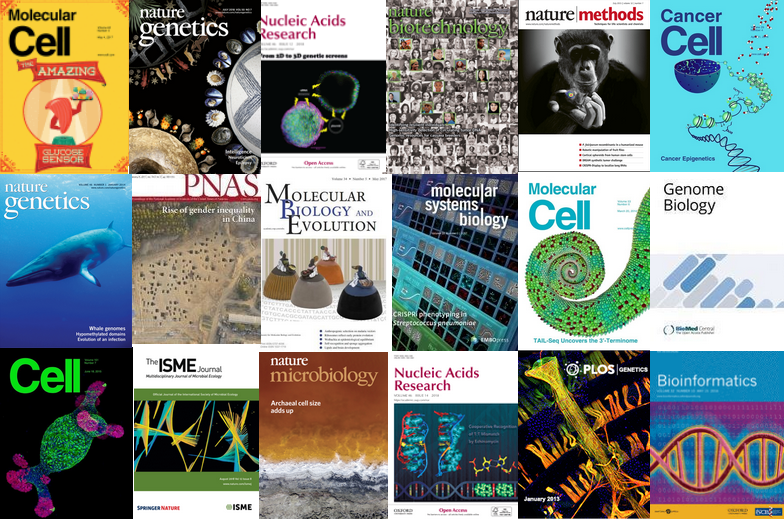

| Organizer | Johannes Köster, lead developer Snakemake, founder Bioconda, Felix Wiegand, lead developer of Datavzrd. |
|---|---|
| Dates | 2026, Nov 16+17 (you can register for days individually) |
| Audience | Primarily members of BIOME and the faculty of Medicine, University of Duisburg-Essen, but remaining places are free for everybody. |
| Location | Raum 0.019, MFZ, Universitätsklinikum Essen |

The Snakemake workflow management system is a tool to create reproducible and scalable data analyses. Workflows are described via a human readable, Python based language. They can be seamlessly scaled to server, cluster, grid and cloud environments, without the need to modify the workflow definition. Snakemake workflows can entail a description of required software, which will be automatically deployed to any execution environment. Finally, Snakemake can be used to automatically generate rich interactive visual reports that contain results together data provenance information. These reports can be easily shared with collaborators (e.g. via email) and only require a web browser for viewing.
With over 1.6 million downloads on Bioconda and on average more than 14 new citations per week in 2025, Snakemake is a widely used and accepted standard for reproducible data science that has powered numerous high impact publications.
Datavzrd turns the large tables that scientific analyses usually end up with (e.g. variant calls or differential expression results) into interactive visual reports. Instead of scrolling through plain spreadsheets, collaborators can search, filter and explore the data on their own, with nothing more than a web browser. Individual columns can easily be turned into heatmaps, various plots or fully custom visualizations, values can link out to external resources, and related tables can be connected to each other. All of this requires no code, only a short and human readable YAML configuration. Reports are self-contained HTML files that can be easily shared (e.g. via email) or attached to a publication as supplementary material, allowing readers and reviewers to explore the data just as interactively as the researchers themselves. Finally, Datavzrd can be run directly from Snakemake, so that reports are regenerated automatically and stay reproducible whenever the analysis changes.
With 1.7 million downloads on conda-forge and almost 700 stars on GitHub, Datavzrd is a widely used tool for the interactive communication of tabular data. More details can be found in our article in PLOS ONE.
Lunch breaks are planned for noon to 1pm. Coffee breaks will be scheduled flexibly during the course, as most parts are self-paced.
| Mon, Nov 16, 9:00 am - 05:00 pm | Snakemake tutorial (basic usage in the morning, advanced usage in the afternoon) |
|---|---|
| Tue, Nov 17, 09:00 am - 04:00 pm | Datavzrd tutorial |